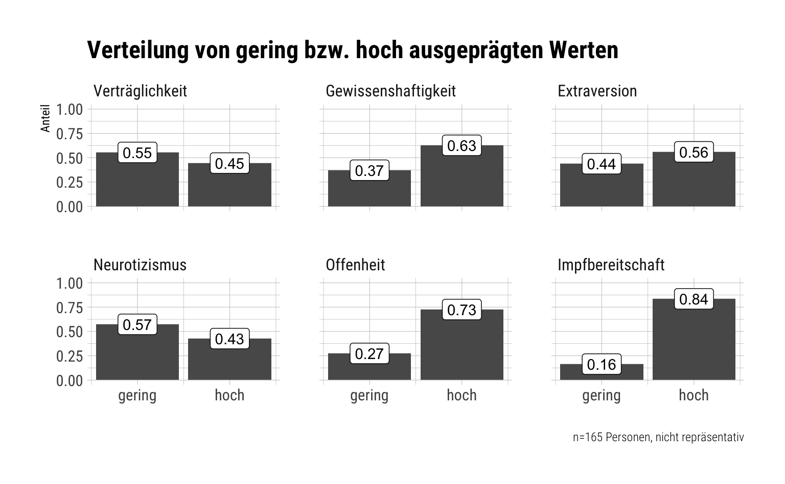
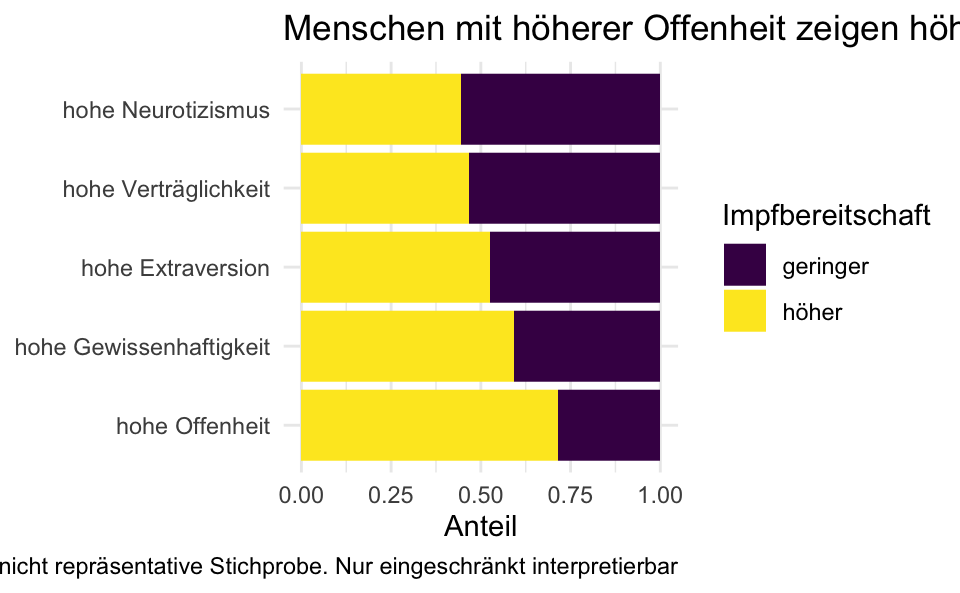
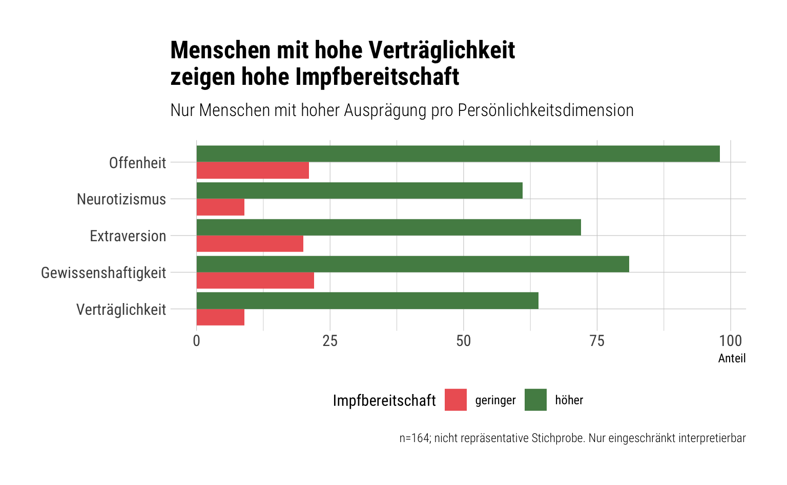
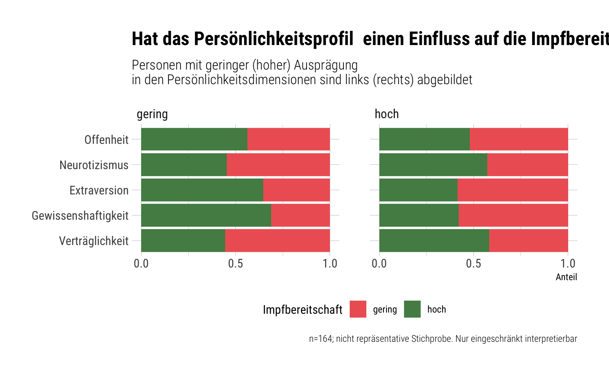
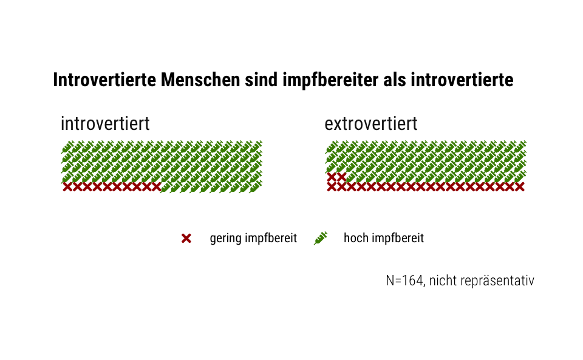

Im Rahmen einer Umfrage wurde die Impfbereitschaft von Studentis im Hinblick auf eine Covid-19-Impfung erfasst.
Es stellt sich die Aufgabe, zentrale Erkentnisse aus diesen Daten darzustellen. In diesem Post werden einige Ansätze dazu vorgestellt.
library(tidyverse)
library(corrr) # Komfort bei Korrelationen
library(broom) # tidy Regressionsergebnisse
library(waffle) # Waffeldiagramm
library(hrbrthemes) # Ggplot2 style
library(magick) # Bildbearbeitungd <- read_csv("https://raw.githubusercontent.com/sebastiansauer/2021-sose/master/data/Impfbereitschaft/d3.csv")Ein Blick in die Daten:
glimpse(d)## Rows: 164
## Columns: 23
## $ timestamp <chr> "23/04/2021 12:22:18", "23/04/2021 12:26:45", "23/04/2021 …
## $ willingness <dbl> 10, 10, 3, 7, 10, 10, 9, 10, 9, 5, 10, 10, 10, 9, 10, 10, …
## $ health <dbl> 9, 10, 10, 10, 10, 10, 9, 9, 9, 10, 10, 10, 10, 9, 8, 10, …
## $ fear <dbl> 5, 7, 2, 6, 5, 3, 7, 5, 5, 1, 2, 7, 7, 7, 10, 6, 4, 2, 3, …
## $ cases <dbl> 1, 7, 0, 10, 8, 4, 3, 5, 3, 4, 4, 1, 5, 3, 0, 12, 2, 2, 2,…
## $ extra1 <dbl> 2, 4, 3, 1, 2, 4, 3, 3, 4, 4, 3, 4, 3, 3, 1, 3, 2, 3, 1, 4…
## $ agree1 <dbl> 2, 3, 5, 3, 3, 3, 5, 4, 3, 4, 2, 2, 4, 5, 1, 4, 4, 2, 3, 3…
## $ cons1 <dbl> 3, 5, 4, 3, 3, 4, 2, 4, 3, 5, 1, 4, 2, 2, 5, 4, 3, 2, 1, 5…
## $ neuro1 <dbl> 2, 4, 3, 4, 3, 4, 3, 3, 3, 4, 3, 3, 5, 3, 5, 3, 3, 2, 3, 3…
## $ open1 <dbl> 4, 3, 5, 2, 3, 5, 4, 4, 5, 5, 2, 4, 5, 4, 3, 4, 4, 5, 4, 4…
## $ extra2 <dbl> 1, 4, 3, 2, 2, 4, 4, 3, 5, 5, 2, 4, 3, 4, 1, 4, 2, 3, 3, 4…
## $ agree2 <dbl> 4, 2, 5, 4, 3, 3, 4, 4, 2, 4, 2, 3, 4, 4, 2, 4, 4, 1, 2, 4…
## $ cons2 <dbl> 4, 4, 4, 4, 4, 4, 4, 4, 4, 4, 3, 4, 4, 4, 5, 5, 5, 4, 4, 4…
## $ neuro2 <dbl> 4, 2, 3, 4, 4, 3, 4, 2, 3, 2, 2, 3, 4, 4, 5, 1, 4, 2, 5, 3…
## $ open2 <dbl> 4, 5, 5, 2, 3, 4, 5, 4, 5, 5, 4, 3, 2, 5, 5, 5, 5, 5, 2, 4…
## $ age <dbl> 20, 19, 21, 20, 20, 19, 20, 19, 20, 22, 22, 24, 18, 20, 21…
## $ sex <chr> "Mann", "Frau", "Mann", "Frau", "Frau", "Frau", "Frau", "F…
## $ comments <chr> NA, NA, NA, NA, "Bin schon geimpft.", NA, "Ich würde mich …
## $ extra <dbl> 1.5, 4.0, 3.0, 1.5, 2.0, 4.0, 3.5, 3.0, 4.5, 4.5, 2.5, 4.0…
## $ agree <dbl> 3.0, 2.5, 5.0, 3.5, 3.0, 3.0, 4.5, 4.0, 2.5, 4.0, 2.0, 2.5…
## $ neuro <dbl> 3.0, 3.0, 3.0, 4.0, 3.5, 3.5, 3.5, 2.5, 3.0, 3.0, 2.5, 3.0…
## $ cons <dbl> 3.5, 4.5, 4.0, 3.5, 3.5, 4.0, 3.0, 4.0, 3.5, 4.5, 2.0, 4.0…
## $ open <dbl> 4.0, 4.0, 5.0, 2.0, 3.0, 4.5, 4.5, 4.0, 5.0, 5.0, 3.0, 3.5…Über die Umfrage kann der Inhalt der Variablen eingesehen werden. Weiter ist eine grundlegende Datenaufbereitung hier dokumentiert.
Das Codebook findet sich im gleichen Repo.
Ja, ein Blick in die Datenaufbereitung zeigt, dass die (ursprünglich) negativ gepolten Items bereits “richtig” (positiv) gepolt vorliegen.
Ja, es liegen bereits Mittelwerte (“Scores”) für die fünf Big-Five-Persönlichkeitsdimensionen vor.
Summieren wir die fehlenden Werte über alle Spalten:
d %>%
summarise(across(everything(), ~ sum(is.na(.))))## # A tibble: 1 x 23
## timestamp willingness health fear cases extra1 agree1 cons1 neuro1 open1
## <int> <int> <int> <int> <int> <int> <int> <int> <int> <int>
## 1 0 0 0 0 0 0 0 0 0 0
## # … with 13 more variables: extra2 <int>, agree2 <int>, cons2 <int>,
## # neuro2 <int>, open2 <int>, age <int>, sex <int>, comments <int>,
## # extra <int>, agree <int>, neuro <int>, cons <int>, open <int>Nur bei den Kommentaren fehlen Werte.
Natürlich hätte man das einfacher schreiben können (aber mit mehr Tippaufwand):
d %>%
summarise(sum(is.na(willingness)))## # A tibble: 1 x 1
## `sum(is.na(willingness))`
## <int>
## 1 0Und entsprechend für alle anderen Variablen des Datensatzes.
Welche nominal skalierten Variablen liegen vor? Gut, man könnte einen einfachen Blick in die Tabelle werfen, aber so ist es etwas cooler:
d %>%
select(where(is.numeric)) %>%
names()## [1] "willingness" "health" "fear" "cases" "extra1"
## [6] "agree1" "cons1" "neuro1" "open1" "extra2"
## [11] "agree2" "cons2" "neuro2" "open2" "age"
## [16] "extra" "agree" "neuro" "cons" "open"Gegenprobe:
d %>%
select(where(~!is.numeric(.))) %>%
names()## [1] "timestamp" "sex" "comments"Geschlecht ist ein Kandidat, der – wenn es nur zwei Werte gibt – mit Nutzen in eine numerische Variable umgewandelt werden kann.
d %>%
count(sex)## # A tibble: 3 x 2
## sex n
## <chr> <int>
## 1 Divers 1
## 2 Frau 129
## 3 Mann 34Da es von einer Stufe (divers) nur eine Beobachtung gibt, bietet es sich an, diese Beobachtung entweder der Gruppe (Frau oder Mann) zuzuordnen, für die die restlichen Werte typischer sind oder diese Beobachtung aufzugeben. Der Einfachheit halber entscheide ich mich für Lezteres.
d2 <-
d %>%
mutate(sex = case_when(
sex == "Divers" ~ NA_character_,
TRUE ~ sex
))d2 %>%
count(sex)## # A tibble: 3 x 2
## sex n
## <chr> <int>
## 1 Frau 129
## 2 Mann 34
## 3 <NA> 1d2 <-
d2 %>%
mutate(is_female = case_when(
sex == "Frau" ~ 1,
sex == "Mann" ~ 0,
TRUE ~ NA_real_
)) %>%
select(-sex)d2 %>%
count(is_female)## # A tibble: 3 x 2
## is_female n
## <dbl> <int>
## 1 0 34
## 2 1 129
## 3 NA 1Jetzt können wir is_female z.B. für eine Korrelation heranziehen. Aber Achtung: Die Schiefe der Verteilung limitiert die Höhe der Korrelation!
d2 %>%
select(where(is.numeric)) %>%
select(-matches("[[:digit:]]")) %>%
correlate() %>%
focus(willingness) %>%
arrange(-abs(willingness))## # A tibble: 10 x 2
## term willingness
## <chr> <dbl>
## 1 fear 0.396
## 2 cons -0.200
## 3 extra -0.184
## 4 cases -0.160
## 5 health -0.121
## 6 neuro 0.101
## 7 open -0.0648
## 8 is_female 0.0178
## 9 agree 0.00516
## 10 age -0.00455Hier haben wir Variablen, deren Namen eine Zahl beinhalteten, entfernt. Der Grund ist, dass diese Variablen (neuro1, …) einzelne Items codieren, hier aber nur die ganze Skala einer Big-Five-Dimension betrachtet werden soll.
Theoretisch müssten die Items jeweils einer Big-Five-Dimension hoch korrelieren. Überprüfen wir das mal.
d2 %>%
select(matches("[[:digit:]]")) %>%
pivot_longer(everything()) %>%
mutate(dimension = str_extract(name, "\\D+")) %>% # alle Nicht-Ziffern
mutate(name = case_when(
str_detect(name, "1") ~ "i1",
str_detect(name, "2") ~ "i2",
TRUE ~ NA_character_
)) %>%
pivot_wider(names_from = "name",
values_from = "value") %>%
mutate(cor_i1_i2 = map2_dbl(.x = i1,
.y = i2,
.f = cor))## # A tibble: 5 x 4
## dimension i1 i2 cor_i1_i2
## <chr> <list> <list> <dbl>
## 1 extra <dbl [164]> <dbl [164]> 0.679
## 2 agree <dbl [164]> <dbl [164]> 0.262
## 3 cons <dbl [164]> <dbl [164]> 0.417
## 4 neuro <dbl [164]> <dbl [164]> 0.432
## 5 open <dbl [164]> <dbl [164]> 0.422Puh, das war schon etwas Daten-Gymnastik. Man hätte das gleiche Ergebnis auch einfacher bekommen können, etwa so:
d2 %>%
select(extra1, extra2) %>%
correlate()## # A tibble: 2 x 3
## term extra1 extra2
## <chr> <dbl> <dbl>
## 1 extra1 NA 0.679
## 2 extra2 0.679 NAUnd so weiter für jede der fünf Big-Five-Dimensionen.
Halten wir fest: Für Verträglichkeit (agree) ist die Korrelation gering; ansonsten mittel bis gut.
In meinem Kopf schwebt die Idee, die fünf Big-Five-Dimensionen als Prädiktoren der Impfbereitschaft zu präsentieren. Der Grund ist einfach: Die Forschungsfrage “Sagt die Persönlichkeit (voraus), wer sich impfen lassen wird und wer nicht?” ist bestechend und daher wert, analysiert zu werden.
lm1 <- lm(willingness ~ extra + neuro + agree + cons + open, data = d2)
tidy(lm1)## # A tibble: 6 x 5
## term estimate std.error statistic p.value
## <chr> <dbl> <dbl> <dbl> <dbl>
## 1 (Intercept) 11.0 1.73 6.35 0.00000000215
## 2 extra -0.413 0.228 -1.81 0.0721
## 3 neuro 0.0665 0.253 0.263 0.793
## 4 agree 0.116 0.241 0.483 0.630
## 5 cons -0.565 0.246 -2.30 0.0230
## 6 open -0.0338 0.232 -0.145 0.885Das Ergebnis zeigt: Das Signal-Rausch-Verhältnis ist höchstens bei cons akzeptabel, und das auch nur grenzwertig.
Reicht das für eine “Story”? Eher nicht.
Insgesamt muss die Datenqualität als eingeschränkt bezeichnet werden: Die Stichprobe ist nicht groß und die Repräsentativität unklar. Non-Response-Bias kann nicht abgeschätzt werden. Daher sollten die Ergebnisse nur mit großem Vorbehalt interpretiert werden.
Kausale Interpretationen der Daten sind kaum möglich.
Diese Visualisierung soll eine sehr einfache, eingängige Visualisierung des Zusammenhangs von Persönlichkeit und Impfbereitschaft aufzeigen. Die Visualisierung ist unterkomplex. Mehr dazu weiter unten.
Für eine einfaches Verständnis für eine Zielgruppe, die wenig “datenkundig” (data literate) ist, soll hier eine Dichotomisierung der Daten (z.B. anhand des Medians) vollzogen werden.
Ausdrücklich sei gewarnt, dass eine Median-Aufteilung statistisch fahrlässig ist. Diese Methode wird hier nur illustrativ gezeigt.
main_vars <- c("willingness",
"extra",
"open",
"agree",
"neuro",
"cons")median_split <- function(var) {
ifelse(var > median(var, na.rm = TRUE), 1, 0)
}d3 <-
d2 %>%
select(all_of(main_vars)) %>%
mutate(across(.cols = all_of(main_vars),
.fns = median_split,
.names = "{.col}_bin" # "bin" wie "binär"
))Natürlich hätte man das auch wieder einfacher lösen können (aber mit mehr Tipp-Aufwand):
d2 %>%
mutate(willingness_bin = ifelse(willingness > median(willingness), 1, 0)) %>%
select(willingness, willingness_bin)## # A tibble: 164 x 2
## willingness willingness_bin
## <dbl> <dbl>
## 1 10 1
## 2 10 1
## 3 3 0
## 4 7 0
## 5 10 1
## 6 10 1
## 7 9 0
## 8 10 1
## 9 9 0
## 10 5 0
## # … with 154 more rowsDie Verteilung von willingness scheint sehr schief zu sein:
d2 %>%
ggplot(aes(x = willingness)) +
geom_density()Anstelle des Medians soll hier der Skalen-Mittelpunkt zur Dichotomisierung gewählt werden:
scale01 <- function(x) {
rng <- range(x, na.rm = TRUE)
(x - rng[1]) / (rng[2] - rng[1])
}Zuerst skalieren wir auf 0 bis 100%, um die Skalierung anzugleichen:
d4 <-
d2 %>%
select(all_of(main_vars)) %>%
mutate(across(everything(),
scale01,
.names = "{.col}_01"))head(d4)## # A tibble: 6 x 12
## willingness extra open agree neuro cons willingness_01 extra_01 open_01
## <dbl> <dbl> <dbl> <dbl> <dbl> <dbl> <dbl> <dbl> <dbl>
## 1 10 1.5 4 3 3 3.5 1 0.125 0.75
## 2 10 4 4 2.5 3 4.5 1 0.75 0.75
## 3 3 3 5 5 3 4 0.222 0.5 1
## 4 7 1.5 2 3.5 4 3.5 0.667 0.125 0.25
## 5 10 2 3 3 3.5 3.5 1 0.25 0.5
## 6 10 4 4.5 3 3.5 4 1 0.75 0.875
## # … with 3 more variables: agree_01 <dbl>, neuro_01 <dbl>, cons_01 <dbl>Dann teilen wir in kleine und große Werte auf: Kleiner 50% soll “klein” sein, sonst “groß”.
bin_01 <- function(var) {
ifelse(var > .5, 1, 0)
}d5 <-
d4 %>%
select(contains("_01")) %>%
mutate(across(everything(),
bin_01))dim(d5)## [1] 164 6head(d5)## # A tibble: 6 x 6
## willingness_01 extra_01 open_01 agree_01 neuro_01 cons_01
## <dbl> <dbl> <dbl> <dbl> <dbl> <dbl>
## 1 1 0 1 0 0 1
## 2 1 1 1 0 0 1
## 3 0 0 1 1 0 1
## 4 1 0 0 1 1 1
## 5 1 0 0 0 1 1
## 6 1 1 1 0 1 1d6 <-
d5 %>%
select(contains("_01")) %>%
pivot_longer(everything()) %>%
count(name, value) %>%
group_by(name) %>%
mutate(prop = n / sum(n))slice_head(d6)## # A tibble: 6 x 4
## # Groups: name [6]
## name value n prop
## <chr> <dbl> <int> <dbl>
## 1 agree_01 0 91 0.555
## 2 cons_01 0 61 0.372
## 3 extra_01 0 72 0.439
## 4 neuro_01 0 94 0.573
## 5 open_01 0 45 0.274
## 6 willingness_01 0 27 0.165d6 %>%
select(name, prop) %>%
mutate(dimension = str_remove(name,"_01")) %>%
group_by(dimension) %>%
mutate(value = c(0,1)) %>%
ungroup() %>%
ggplot() +
aes(x = value, y = prop) +
geom_col() +
facet_wrap(~ dimension)
Das Diagramm zeigt allerdings noch keine Korrespondenz (keinen Zusammenhang) zwischen Impfbereitschaft und den einzelnen Big-Five-Dimensionen. Also weiter.
d7 <-
d5 %>%
pivot_longer(extra_01:last_col()) %>%
group_by(name, willingness_01) %>%
count(value) %>%
mutate(prop = n / sum(n)) d7## # A tibble: 20 x 5
## # Groups: name, willingness_01 [10]
## name willingness_01 value n prop
## <chr> <dbl> <dbl> <int> <dbl>
## 1 agree_01 0 0 18 0.667
## 2 agree_01 0 1 9 0.333
## 3 agree_01 1 0 73 0.533
## 4 agree_01 1 1 64 0.467
## 5 cons_01 0 0 5 0.185
## 6 cons_01 0 1 22 0.815
## 7 cons_01 1 0 56 0.409
## 8 cons_01 1 1 81 0.591
## 9 extra_01 0 0 7 0.259
## 10 extra_01 0 1 20 0.741
## 11 extra_01 1 0 65 0.474
## 12 extra_01 1 1 72 0.526
## 13 neuro_01 0 0 18 0.667
## 14 neuro_01 0 1 9 0.333
## 15 neuro_01 1 0 76 0.555
## 16 neuro_01 1 1 61 0.445
## 17 open_01 0 0 6 0.222
## 18 open_01 0 1 21 0.778
## 19 open_01 1 0 39 0.285
## 20 open_01 1 1 98 0.715name_order <-
d7 %>%
filter(value == 1, willingness_01 == 1) %>%
arrange(-prop) %>%
pull(name)
name_order## [1] "open_01" "cons_01" "extra_01" "agree_01" "neuro_01"name_order_de <- c(
"hohe Offenheit",
"hohe Gewissenhaftigkeit",
"hohe Extraversion",
"hohe Verträglichkeit",
"hohe Neurotizismus"
)d8 <-
d7 %>%
mutate(name = factor(name, levels = name_order))d8 %>%
filter(willingness_01 == 1) %>%
mutate(Impfbereitschaft = case_when(
value == 0 ~ "geringer",
value == 1 ~ "höher"
)) %>%
ggplot() +
aes(x = name, y = n, fill = as.factor(Impfbereitschaft)) +
geom_col(position = "fill") +
scale_fill_viridis_d() +
theme_minimal() +
coord_flip() +
scale_x_discrete(labels = name_order_de) +
labs(x = NULL,
y = "Anteil",
fill = "Impfbereitschaft",
title = "Menschen mit höherer Offenheit zeigen höhere Impfbereitschaft",
caption = "n=164; nicht repräsentative Stichprobe. Nur eingeschränkt interpretierbar")
Vielleicht wäre es interessanter, die Ungleichheit in den Ausprägungen der Persönlichkeitsdimensionen (Hohe Werte vs. niedrige Werte) in den Hoch- und Niedrig-Impfwilligen zu berechnen. Also nochmal weiter.
d8 %>%
filter(value == 1) %>%
group_by(name) %>%
summarise(diff_hoch_vs_gering_impfwillig = prop[[2]] - prop[[1]])## # A tibble: 5 x 2
## name diff_hoch_vs_gering_impfwillig
## <fct> <dbl>
## 1 open_01 -0.0624
## 2 cons_01 -0.224
## 3 extra_01 -0.215
## 4 agree_01 0.134
## 5 neuro_01 0.112Der Effekt bei den Gewissenhaften ist am stärksten. Allerdings ist der Effekt bei den Extravertierten besser zu interpretieren: “Die Extrovertierten sind weniger impfbereit als die introvertierten”. Außerdem ist der Effekt fast genau so stark.
Korrespondenz von Extraversion und Impfbereitschaft
d8 %>%
filter(name == "extra_01")## # A tibble: 4 x 5
## # Groups: name, willingness_01 [2]
## name willingness_01 value n prop
## <fct> <dbl> <dbl> <int> <dbl>
## 1 extra_01 0 0 7 0.259
## 2 extra_01 0 1 20 0.741
## 3 extra_01 1 0 65 0.474
## 4 extra_01 1 1 72 0.526d8 %>%
filter(name == "extra_01") %>%
rename(Extraversion = value,
Anteil = prop,
Impfbereitschaft = willingness_01) %>%
mutate(Extraversion = case_when(
Extraversion == 0 ~ "introvertiert",
Extraversion == 1 ~ "extravertiert",
)) %>%
mutate(Impfbereitschaft = case_when(
Impfbereitschaft == 0 ~ "gering",
Impfbereitschaft == 1 ~ "hoch",
)) %>%
ggplot(aes(x = Extraversion,
y = Anteil, fill = Impfbereitschaft)) +
geom_col(position = "fill") +
labs(title = "Introvertierte sind impfbereiter")
Das ist aus Kommunikationssicht eine passable Botschaft.
ACHTUNG Die wissenschaftliche Belastbarkeit dieser Aussage ist wackelig!
willingness_low <- c("geringe Extraversion" = 26,
"hohe Extraversion" = 74)Zur Installation von Font Awesome:
library(extrafont)
install_fa_fonts()
font_import(paths = "/Users/sebastiansaueruser/Rlibs/waffle/fonts/", prompt = F)waffle(willingness_low,
flip = TRUE,
reverse = TRUE,
use_glyph = "syringe",
colors = c("grey60", "dodgerblue"),
size = .1,
title = "Persönlichkeitsmerkmal 'Extraversion' \nunter Personen mit geringer Impfbereitschaft") +
expand_limits(y = c(0, 4)) +
theme(legend.position = "bottom")
#ggsave(test.png)
d8a <-
d8 %>%
filter(name == "extra_01") %>%
mutate(willingness_01 = factor(willingness_01)) %>%
ungroup() %>%
select(willingness_01, n, value, prop) %>%
mutate(n = as.numeric(n)) %>%
mutate(value = as.factor(value))
d8a## # A tibble: 4 x 4
## willingness_01 n value prop
## <fct> <dbl> <fct> <dbl>
## 1 0 7 0 0.259
## 2 0 20 1 0.741
## 3 1 65 0 0.474
## 4 1 72 1 0.526Facetten-Labels:
levels(d8a$value)## [1] "0" "1"levels(d8a$value) <- c("introvertiert ", "extrovertiert")d8a %>%
ggplot(aes(label = willingness_01,
values = n)) +
geom_pictogram(n_rows = 20,
size = 3,
aes(colour = willingness_01),
flip = TRUE,
make_proportional = TRUE) +
scale_color_manual(
name = NULL,
values = c("#a40000", "chartreuse4"),
labels = c("gering impfbereit", "hoch impfbereit")
) +
scale_label_pictogram(
name = NULL,
values = c("times", "syringe"),
labels = c("gering impfbereit", "hoch impfbereit")
) +
coord_equal() +
theme_ipsum_rc(grid="") +
theme_enhance_waffle() +
theme(legend.key.height = unit(1, "line")) +
theme(legend.text = element_text(size = 8,
hjust = 0, vjust = 0)) +
facet_wrap(~ value, nrow = 1) +
theme(legend.position = "bottom") +
theme(legend.text = element_text(hjust = 0, vjust = 0.5)) +
labs(title = "Introvertierte Menschen sind impfbereiter als introvertierte",
caption = "N=164, nicht repräsentativ") +
theme(plot.title = element_text(size = 12))
Bild speichern:
ggsave("impf1.png", dpi = 300)Whitespace abschneiden:
img <- image_read("impf1.png")
img2 <- image_trim(img)
image_write(img2, path = "impf2.png" )Die wissenschaftliche Belastbarkeit der Studie ist fraglich. Mehr noch: Die Nützlichkeit eines Waffel-Diagramms (oder Pictogramms) ist ebenfalls fragwürdig. Wahrnehmungspsychologisch sind andere Darstellungsformen – etwa ein Balkendiagramme für Häufigkeiten – besser geeignet. Darüber hinaus: Die Dichotomisierung der Daten, also der Verlust von Skaleninformation ist statistisch zumeist nicht zu begründen. Alles in allem steht in dieser Analyse der didaktische Blick zur Frage “Wie erstelle ich ein Diagramm, das unterhält?” im Vordergrund. Die wissenschaftlichen “Kosten” eines solchen Vorgehens spielten hier keine Rolle. Entsprechend eingeschränkt ist die Interpretierbarkeit dieser Analyse bzw. dieses Diagramms. Nur mit äußerster Vorsicht zu interpretieren!